Misiones: San Miguel de Velasco
Departamento de Santa Cruz · Cultura e historia
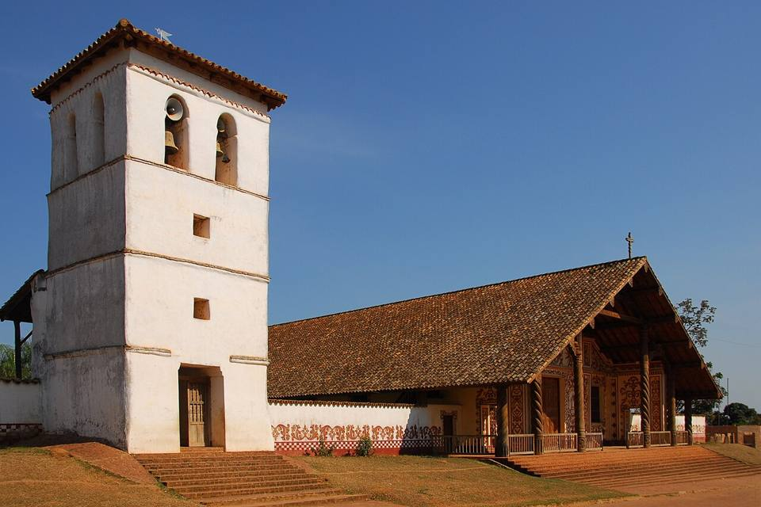
San Miguel de Velasco es un pueblo misional tranquilo, al sur de San Ignacio. Su templo del siglo XVIII, de madera pintada, es uno de los más bellos del circuito, y el pueblo es famoso por sus talleres de tallado: se ve a los artesanos tallar ángeles, santos y retablos, como en tiempos de los jesuitas.
400 maltura
1 díapara quedarse
Qué hacer
- Templo misional de madera pintada
- Talleres de tallado en madera
- Plaza del pueblo y vida local
Qué comer
- Quesos de ChiquitosQuesos frescos de vaca hechos en los pueblos misionales, con pan casero.
- Locro de gallinaSopa espesa de arroz con gallina criolla, reconfortante, típica del Oriente.
Consejo. Se combina en un día con Santa Ana y San Rafael desde San Ignacio.
También aquí
- UNESCO Misiones jesuíticas de Chiquitos
- Artesanía y mercados Tallado en madera de ChiquitosÁngeles, santos y retablos: los talleres de San Miguel siguen el tallado de las misiones jesuíticas y todavía restauran los templos de la región.
Cómo llegar a San Miguel
San Rafael Carretera (bus, auto) · 45 min
Taxi o algún micro.
San Ignacio Carretera (bus, auto) · 1 h (circuito de un día)
Taxi o excursión de un día (circuito San Miguel, San Rafael y Santa Ana).
San José Carretera (bus, auto) · 4 a 6 h
Buses poco frecuentes, o auto.
Fotos de Misiones: San Miguel de Velasco
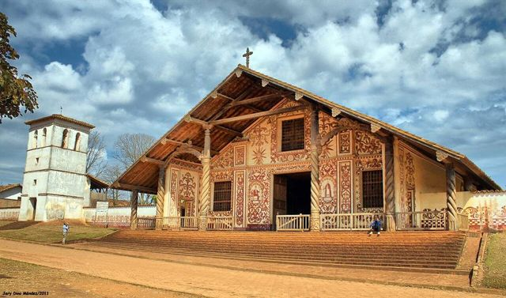

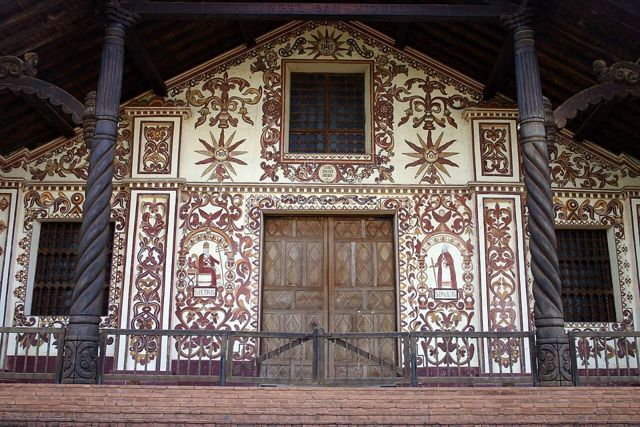

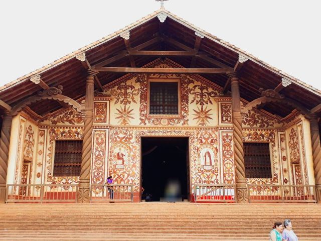

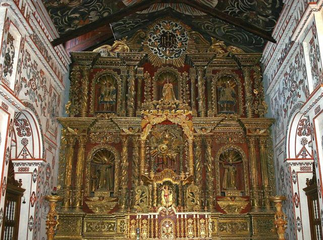

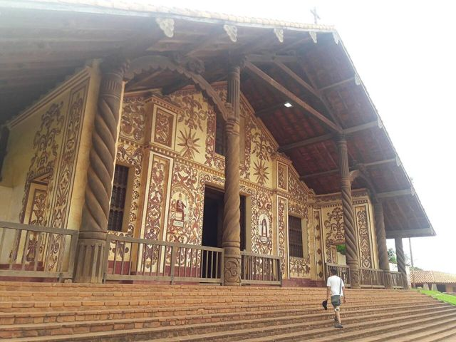
.jpg){kind=link}
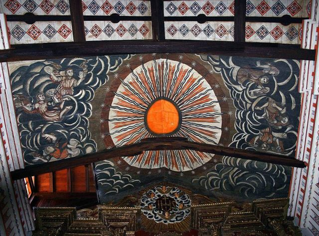

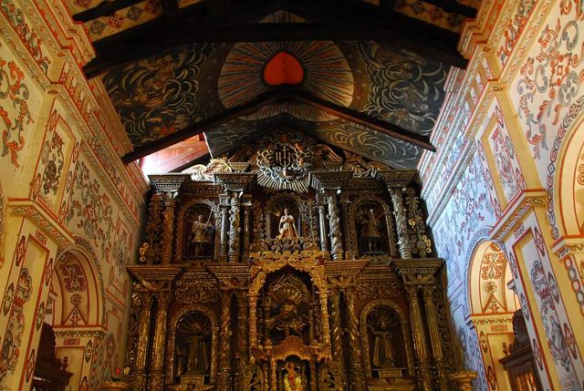

Otros lugares de la región
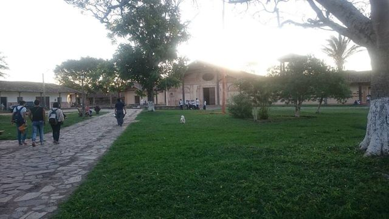
Misiones: San JavierLa primera de las misiones jesuíticas de Chiquitos (UNESCO), con templos de madera pintada.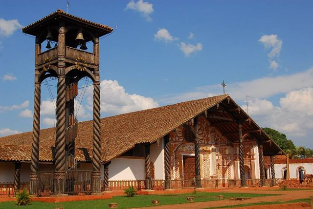
Misiones: ConcepciónLa plaza más linda de las misiones, con taller de restauración y museo.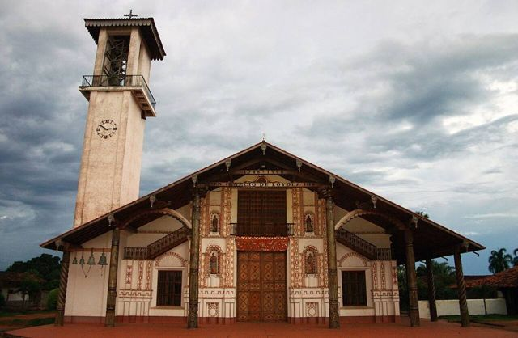
Misiones: San Ignacio de VelascoEl cruce del circuito de las misiones, con su laguna.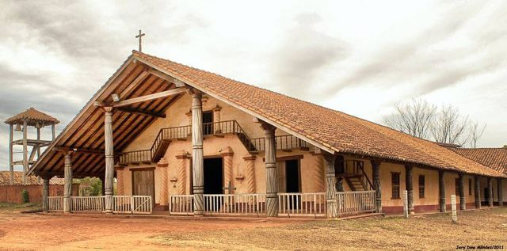
Misiones: Santa Ana de VelascoLa más auténtica de las misiones de Chiquitos, con su órgano original.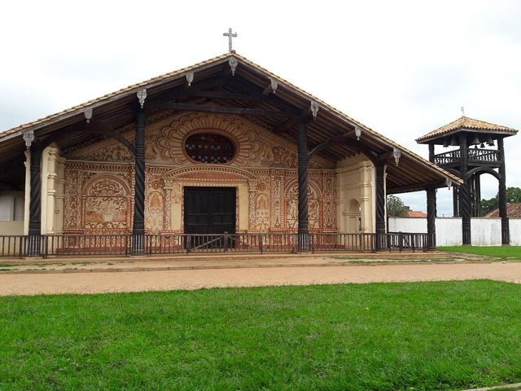
Misiones: San Rafael de VelascoTemplo misional decorado con mica y madera pintada, entre San Ignacio y San José.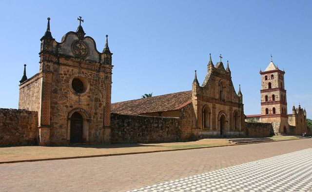
Misiones: San José de ChiquitosLa única misión jesuítica de piedra, al pie de la serranía.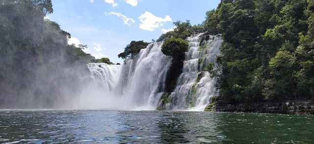
Parque Nacional Noel Kempff MercadoParque UNESCO inmenso y muy aislado: la meseta de Huanchaca y la catarata Arco Iris.